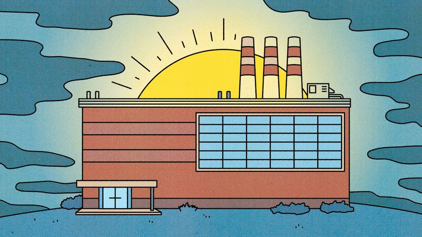
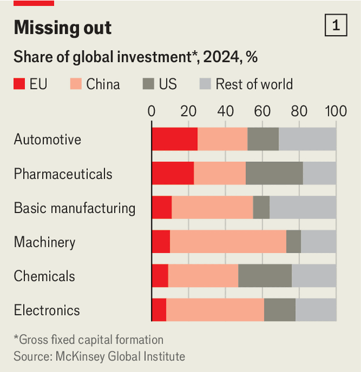
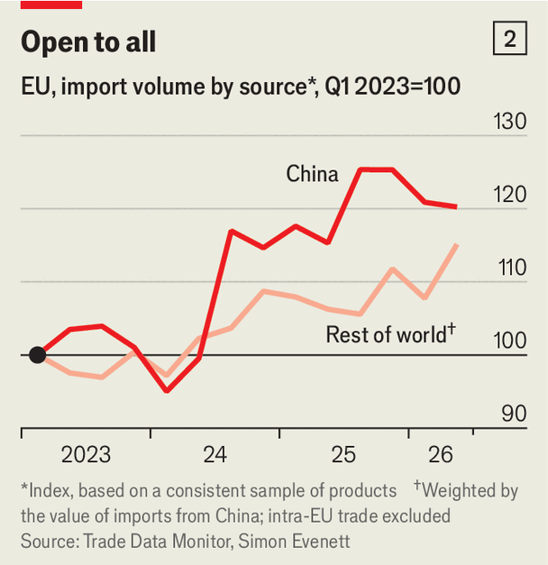

欧洲工业比你想象的要好
European industry is doing better than you may think
最受中国冲击的企业在受苦，但很多正在调整

- 欧洲化工行业协会负责人门辛克先给出坏消息：高能源价格和中国竞争正逼出关厂与裁员，进一步整合“不可避免”。但他桌上的“希望”是一截电缆——导体来自中国企业，绝缘聚合物却出自奥地利博禄，那是中国人暂时还造不出来的部分。
- 欧盟工业整体承压：大众9月21日宣布加码重组，今年已有五家欧洲车企发布盈利预警。但细看之下，损伤集中在少数行业，很多企业正在适应更严酷的现实。
- 压力来自两头：一是能源，法德工业电价约为美中两倍；二是中国，其过剩产能叠加内需疲软，把被特朗普关税挡回的出口转向欧洲，欧盟对华货物贸易顺差因此自2019年以来翻倍至4200亿美元。
- 但“廉价中国商品冲垮欧洲”被夸大了：2023年以来欧盟自华进口量增幅只略高于其他来源。真正该担心的是欧洲在人工智能上越落越远——能源与中国的威胁被高估，AI 落后的风险大概没有。
“想看点希望吗？”马尔科·门辛克问。这位欧洲化工企业游说组织Cefic的负责人先给出一份惨淡诊断：高能源价格和中国竞争正迫使工厂关门、工人失业。进一步的整合“不可避免”。希望，是他在办公桌上方放着的一截电缆横截面。它由电缆巨头中国企业东方电缆制造，但包裹导线的绝缘聚合物出自奥地利公司博禄国际。门辛克说，他去中国时，业内大佬不断打听这家欧洲企业。那是电缆中他们唯一还做不出来的部分——暂时。
欧盟工业体系的大部分都在承压。9月21日，大众汽车表示将加快重组。它是今年发布盈利预警的五家欧洲车企之一，都受到中国对手的冲击。欧盟委员会——欧盟的执行机构——感到警觉。委员会主席乌尔苏拉·冯德莱恩最近警告说，对华贸易逆差正处于“临界点”。
但细看之下，除了一种世界领先的聚合物，还能看到更多希望。人们都在为普遍的去工业化焦虑，可眼下的损伤只集中在少数行业。欧洲工业的一部分过得不错；而在受威胁之处，企业也在适应更严酷的新现实。
近期部分欧洲生产商的困境源于两个因素。一是能源，它长期比美国或中国贵。不算补贴，法国和德国的工业电价约为美中两国的两倍。乌克兰和伊朗的战争更把成本推高。
二是中国。其产业政策、创新和质量进步，推动了从钢卷到电动汽车的各类产品生产。充裕的供给恰逢国内需求疲软，部分过剩产能正在海外寻找出口。特朗普的贸易限制让欧洲成为中国出口商的主要目标。
与此同时，欧洲企业发现很难在中国销售——那里曾是庞大、高速增长、高利润的市场。它们往往使用当地工厂和供应链，这又限制了从欧洲本土出口。于是中国对欧盟的货物贸易顺差自2019年以来翻了一倍多，达到4200亿美元。
车企受创尤重。中国曾是它们的利润引擎，但如今中国生产商把新的（而且不错的）车型推向市场的速度更快、成本更低。欧盟汽车产量较疫情前下降17%。汽车业提供了欧盟6%的就业，难怪政策制定者寝食难安。

挤压意味着可用于投资的现金减少，进一步加大欧盟企业掉队的风险。咨询公司麦肯锡对六个行业的研究显示，2024年欧洲在三个行业（制药、电子和化工）获得的投资低于美国和中国；没有任何一个行业拿到最多（见图1）。
一切都很悲观。但这不意味着欧洲工业全都注定完蛋，远非如此：痛苦在国家和行业层面都高度集中。德意志银行的埃里克·海曼指出，近年来整个欧盟制造业占全部增加值总额的比重稳定在16%左右。在德国、意大利等部分国家略有下降。就业数据也类似。自2023年初以来，欧盟制造业就业减少约2%，降至2800万。德国一国就占了降幅的五分之四。而在总就业下降的同时，工程师、技术员等高技能岗位增加了7%。
一些行业正红火。制药、航空航天和电子的就业自2023年初以来上升。人工智能热潮让法国的施耐德电气、德国的西门子和意大利的普睿司曼受益——它们都生产让数据中心持续运转的设备。随着国防预算增长，德国莱茵金属、意大利莱昂纳多等军火商都在扩产。

中国的威胁也是集中的，贸易数据可以说明。瑞士商学院IMD的西蒙·伊夫内特认为，“廉价中国商品冲垮欧洲企业”的常规叙事被夸大了。他发现，2023年以来欧盟自中国的进口量增幅，只比同类商品从其他地方的进口增幅高一点点（见图2）。欧洲从各地进口都在增加，不只是中国。
当然，从中国进口的某些东西猛增。伊夫内特还检视了德国自中国进口的前100大商品，挑出2023年以来进口量增长超过25%、价格下跌超过10%的那些。有11项符合。在这11项中（包括电动汽车、家具和部分化工品），中欧商品正面竞争。但“廉价中国产品在掏空欧洲工业”的说法似乎站不住脚。
而且，一些中国进口品可能帮到欧洲企业。在2023年以来对中国全球出口增长贡献最大的100种产品中，四分之三的增长来自零部件和中间品，例如电动车电池和机械臂。这些对同类设备的制造商构成威胁，但对欧洲买家来说，它们降低了生产成本。欧洲央行的一项研究发现，2000年至2022年间，在受中国中间品进口影响的行业，工业生产的年增速提高了0.6个百分点；而在受中国成品进口影响的行业，年增速下降约1个百分点。
在很多方面，欧洲企业界对变化的环境适应得不错。在太阳能充足、能源价格较低的西班牙，欧洲企业2021年至2025年的年投资额比前五年翻了一倍。摩根士丹利的一份报告认为，相比2022年乌克兰战争切断俄罗斯天然气时，欧洲企业“准备充分得多”。一些企业采取了能效措施，或安装了更多本地可再生能源；另一些做更多金融对冲。比利时-法国化工企业索尔维和德国盐业公司K+S已为今年的能耗做了大部分对冲。
欧盟制造商也在卖更多服务：2024年出口额达4600亿美元，两年增长21%。对丹麦风机制造商维斯塔斯、德国企业MTU航空发动机等公司来说，这意味着维护合同。另一些企业则卖更多软件，并把软件嵌入硬件。德国工程巨头西门子很早就抓住了这一点，收购了多家软件公司。
事实上，许多商界领袖和政策制定者认为，欧洲工业的未来可能系于软件，尤其是人工智能。冯德莱恩已请西门子董事长吉姆·哈格曼·斯纳布就人工智能如何提升生产率提交报告。德国每名员工拥有的工业机器人数量已居世界第三，仅次于新加坡和韩国，瑞典和丹麦紧随其后。
这意味着欧洲有潜力。但欧洲大陆应当停止为旧产业哀悼，而要确保自己能驾驭人工智能等新技术的力量。欧洲与美国、中国在人工智能上的差距很大，且不只在模型开发上，还可能继续拉大。能源价格和中国对欧洲工业的威胁被夸大了；如果欧洲在人工智能上进一步掉队，那种风险大概没有。